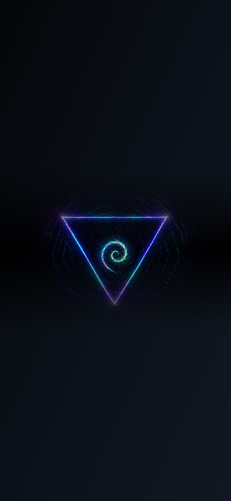

Firstmate / Conversation
Firstmate
Attention
Human judgment
Firstmate approval
Deploy to staging
Requesting agent: Firstmate. Impact: staging auth flow update. Checks: passing. Risk: medium, reversible.
GitHub PR
PR #142 ready for review
Repository, PR number, checks, author, branch, and review state are represented as static placeholders for this wireframe.
GitHub / Demo PR Brief
PR review
Authentication callback hardening
- Repo
- calvin-rutherford/Magistrate
- Branch
- fm/auth-callback-demo
- Checks
- Passing
- Review
- Needs captain review
This is a static PR brief state. The production app must open the exact live PR URL from GitHub data.
Agent Conversation
fm-auth
Agent Conversation
fm-api
No current action
This honest empty state replaces fake activity when no durable conversation or task is available.
Agent Conversation
fm-ui
Waiting on checks
The agent is deliberately waiting for an external result. It is not blocked and does not need a decision.
Blocked Agent
fm-release
Release credentials unavailable
The release worker cannot continue without a scoped credential decision. This state belongs in Attention when captain action is required.
Recent Activity
Meaningful outcomes
Connections
Authenticated services
GitHub
Demo connected state; production must use real OAuth/account health.
Jira
Authorization required.
Microsoft Teams
Permission denied by tenant/admin policy.
OAuth failure
Callback failed or expired. The user can retry without implying access was granted.
Settings / Appearance
Background
Custom image placeholder
Production must persist uploaded photos durably and keep an adaptive readability layer between image and content.
Conversational Voice
Listening in chat
"Deploy it after the tests pass..."
Voice Call

Validation States
Honest system states
Choose a state
Each state disables or labels behavior instead of filling the product with fake data.